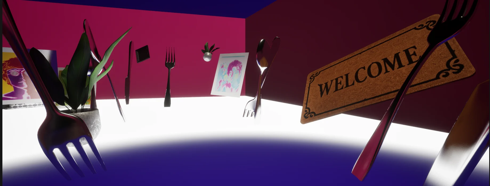

Mundo de la llave
“Llegó el día, por fin me voy a mudar.”
(Una mudanza a través de cuatro puertas; en un cajón está la llave que abre la cerradura de la salida.)
- “Llegó el día, por fin me voy a mudar.”
- “Te voy a extrañar, hijo.”
- “Te regalo esto, espero que te guste.”
- “¿En dónde quedaron las llaves?”
- “Me falta lo más importante.”
- “Creo que la guardaste en la mesita de luz.”
- “¡Sí! ¡Acá están!”
- Llaves en el cajón · en la cerradura · abriendo la puerta